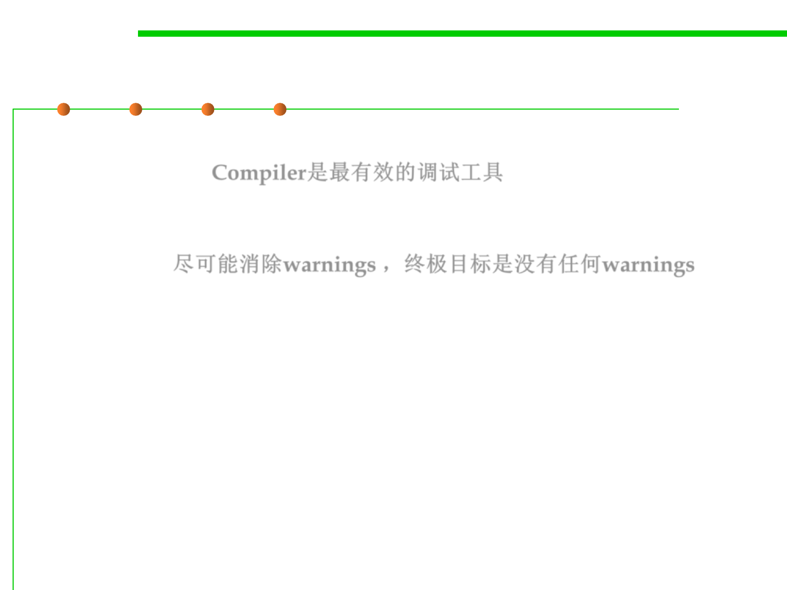

Compiler Warning Messages
7.4 Debugging
▪ One of the simplest and most effective debugging tools is your
own compiler. Compiler是最有效的调试工具
▪ Set your compiler’s warning level to the highest, pickiest level
possible and fix the code so that it doesn’t produce any compiler
warnings. 尽可能消除warnings ，终极目标是没有任何warnings
– Assume that the people who wrote the compiler know a great deal more
about your language than you do. If they’re warning you about
something, it usually means you have an opportunity to learn something
new about your language. Make the effort to understand what the
warning really means.